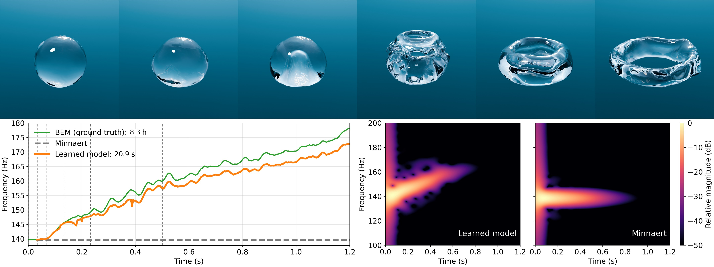

Single rising bubble. A bubble deforms from a sphere into a torus as it rises (top, with frame times marked). We apply our model zero-shot to new bubbles outside the dataset, with no scene-specific fitting. BEM ground truth and the learned model both climb as the shape flattens while Minnaert stays fixed (bottom left; dashed lines mark the frames above). Our model stays within 1.65 % of BEM on average at a fraction of the cost, compared with Minnaert's 12.84 % error. The difference is audible in the rendered audio (bottom right).
For the single rising bubble, we solved BEM on all 282 mesh frames of the bubble in this figure, with no vertex cap; the other LBM scenes cap BEM at 5000 vertices.
| File | What it holds |
|---|---|
bub1_only_nocap_all_rows.csv |
one row per mesh frame: BEM frequency, assembly and solve times, surrogate frequency and timings, vertex counts |
bub1_bem_solve_timing.md |
the per-frame BEM ledger; the source of Table 1's 103603+2361 ms |
single_bubble_nn_timing.json |
the standalone surrogate pass; Table 1's 74.2 ms |
bub1_only_nocap_regressor_freqs.csv |
the baseline regressors on the same meshes |
vertex_scan.csv | vertex count per mesh |
README.md | Table 1's row for this scene, accounted cell by cell |
dataset/single_rising_bubble/ |
the scene; its BEM column covers bubble 1 only, the bubble this figure follows |